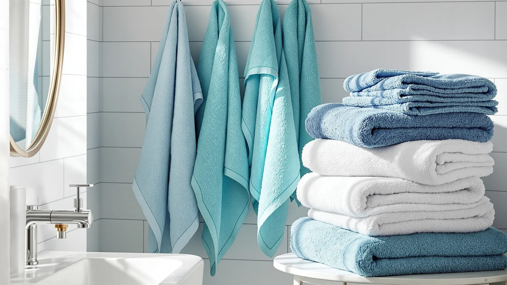

Bath Towels vs Pool Towels: Which Is Better? (2026)
Prices and picks verified as of September 2026. Independent, reader-supported reviews.


Things to Know Before You Buy
- They are built for different water. In the bath towels vs pool towels comparison, a bath towel is optimized for plain water and indoor use, while a pool towel has to shrug off chlorine, sunscreen, and hours of sun without breaking down.
- Weave density points in opposite directions. Bath towels favor a dense terry loop for fast absorption, while most pool towels use a flatter, lighter weave so they dry quickly between swims and pack small in a bag.
- Size follows function. A standard bath towel runs about 27 by 52 inches, while pool towels often start at 30 by 60 inches so there is room to lie on a lounge chair or share with a kid.
- Chlorine shortens a towel's life fast. Reviewers consistently note that a plush cotton bath towel used poolside fades and thins within a season, well before a comparable pool towel shows the same wear.
- Price tracks size and fabric. A pool towel often costs more per piece than a bath towel simply because it uses more material, not because the fibers are better.
Bath towels vs pool towels is a question most people only think about after grabbing the wrong one, drying off in the bathroom with a towel built for the water's edge, or heading to the pool with something meant for the linen closet. Both categories start from similar cotton or microfiber stock, but the two are engineered for different jobs.
This guide compares how each one handles absorbency, chlorine exposure, drying speed, and cost, based on published fabric specs and verified owner reviews, so you know which towel earns a spot in your bathroom and which one belongs in the pool bag.
Quick Answer
For everyday drying at home, a dense cotton bath towel wins on absorbency and softness in a size that stores easily. For the pool or backyard, a pool towel wins because its lighter, tighter weave resists chlorine, sheds water fast, and covers more space on a lounge chair. Most households end up needing a set of each rather than picking one over the other.
What is Bath Towels?
A bath towel is the towel you keep folded in a linen closet and reach for right after a shower. Standard sizes run about 27 by 52 inches, compact enough to hang on a single bar while still wrapping around an adult body. In the bath towels vs pool towels comparison, the bath towel is built around one priority: pulling water off skin as fast as possible.
Most bath towels use cotton, Turkish cotton, or a cotton-microfiber blend, woven into tight loops measured in grams per square meter, or GSM. A towel in the 500 to 700 GSM range feels plush and absorbs quickly without becoming a heavy, slow-drying weight once wet. Because bath towels stay indoors and wash every few uses, manufacturers optimize them for softness and absorbency over resistance to sun or chemicals. For a deeper look at fiber and weight choices, our bath towel buying guide covers the full range.
What is Pool Towels?
A pool towel is built to travel outside the house and survive conditions a bathroom never sees. Sizes typically start around 30 by 60 inches and climb past 40 by 70 inches for oversized options, big enough to cover a lounge chair with room for a bag beside it. In the bath towels vs pool towels split, the pool towel trades some plushness for surface area and chemical resistance.
Fabric leans toward a flatter, tighter weave, often microfiber or a cotton-velour blend, so the towel dries faster in open air and holds up better against chlorine than a dense terry loop would. Because pool towels face sun, chlorine, and repeated wetting, they are typically dyed with more colorfast pigments and printed in bold patterns that hide fading and stains. The tradeoff is that a pool towel rarely feels as soft against skin as a dedicated cotton bath towel does, and quick-dry fabrics in general prioritize function over plushness.
Head-to-Head: Build Quality & Durability
On durability, the bath towels vs pool towels gap comes down to what each fabric has to survive. A bath towel lives indoors, cycles through the wash every three or four uses, and rarely meets anything harsher than hot water and detergent. A well-made 600 GSM cotton towel handles years of that routine before the loops start to thin.
A pool towel faces a tougher test. Chlorine breaks down cotton fibers faster than plain water does, and constant sun exposure fades color on top of that. A tightly woven microfiber or cotton-velour pool towel resists this wear better than a loose terry version, since fewer loose loops means fewer places for chlorine residue to sit and weaken the fabric over time. Owners report that a plush bath towel used poolside all summer can visibly thin and dull within a single season, a fade rate bath towels almost never see indoors. Expect to replace pool towels more often than bath towels, even when both start from comparable cotton stock.
Head-to-Head: Price & Value
Price alone does not settle the bath towels vs pool towels debate, since both categories span a wide range. A solid cotton bath towel runs about $10 to $20 per piece, while a comparable pool towel often costs $15 to $30, mainly because it uses more fabric to cover its larger footprint. Multi-packs shift the math: a six-pack of pool towels can land under $10 per towel, similar to bulk bath towel sets.
Value depends more on replacement frequency than sticker price. A bath towel washed weekly and kept indoors can last three to five years, while a pool towel exposed to chlorine and sun several times a summer often needs replacing sooner, even at a similar price point per towel.
Head-to-Head: Use Experience
Day to day, bath towels vs pool towels show up in two distinct settings. A bath towel meets you right out of the shower in a warm, dry bathroom, and its tightly looped cotton weave soaks up water in a few passes before hanging back on the bar to dry between uses.
A pool towel meets you wet and outdoors, often draped over a lounge chair or spread across a deck for an afternoon. It needs to dry fast in open air and resist holding onto chlorine and sunscreen residue. It also has to survive a damp, rolled-up trip home in a bag without developing a musty smell, something owners report happening quickly with towels left wet for hours. Size changes the experience too: a pool towel can double as a wrap or a seat cushion, jobs a standard bath towel is too small to handle. Bring the wrong one to a pool day and you end up with a towel too small to sit on, or one too heavy to dry before your next swim.
When to Choose Bath Towels
Choose bath towels first if you are restocking a bathroom or replacing a set that has gone thin and scratchy. In the bath towels vs pool towels priority list, the bath towel is the piece used daily at home, so upgrading it pays off immediately in comfort. Prioritize bath towels if you are outfitting a guest bathroom or a short-term rental, where a fresh, soft set signals quality faster than almost anything else in the room. Bath towels also make more sense when storage is tight, since their smaller folded size takes up less shelf room than an oversized pool towel. If your current towels still absorb well and show no fraying, put your next purchase toward a high-absorbency set instead of replacing what already works.
When to Choose Pool Towels
Choose pool towels first if summer trips or regular swim sessions are already on the calendar and your current towel stash is all bathroom-sized. In the bath towels vs pool towels priority list, an undersized towel at the pool means sitting on a wet lounge chair or drying off in stages, sometimes sharing one towel between two people because neither one is big enough alone. Pool towels also make sense for households with backyard pools or frequent gym visits, since chlorine exposure wears them out faster than a bath towel ever experiences. Expect to replace them more often, regardless of which room they end up in. If you travel often, look for a lighter, quick-dry pool towel that packs small, since a plush cotton one can take up half a bag. Our best beach towels roundup breaks down comparable oversized options by size and fabric.
Our Top Picks
Whichever side of the bath towels vs pool towels decision you are shopping for this week, these three picks cover both categories at different price points.

Editor’s Pick
Rainleaf Microfiber Towel Perfect Travel
A compact microfiber towel that dries fast and packs small, a strong pick for the pool bag, gym, or travel case rather than the linen closet.
$12.99
Check Price on Amazon
Best Value
BolBom*S Beach Towels 6 Pack
A six-pack of lightweight pool towels that works out to well under $10 each, a practical option for families who want a spare towel poolside all summer.
$38.98
Check Price on Amazon
Premium Choice
ORIGINAL KIDS Hooded Bath Towel
A hooded cotton bath towel with a dense terry weave, worth stocking the linen closet with once your current bath towels start feeling thin.
$15.99
Check Price on AmazonCan you use a bath towel as a pool towel?
You can, but a bath towel's dense loops trap chlorine and hold water longer than a pool towel's flatter weave, so it takes longer to dry between swims and can start smelling musty if it stays damp in a bag.
Can you use a pool towel as a bath towel?
Yes, though it will not absorb water as fast as a dedicated bath towel.
Frequently Asked Questions
Can you use a bath towel as a pool towel?
Can you use a pool towel as a bath towel?
Do pool towels need to be a different fabric than bath towels?
Why are pool towels bigger than bath towels?
How often should you wash a pool towel compared to a bath towel?
Final Verdict
In the bath towels vs pool towels comparison, neither one replaces the other well. A bath towel earns its place indoors with dense, fast-absorbing loops, while a pool towel earns its place outdoors with a lighter weave built to survive chlorine and sun. For an editor's pick that fits either bag, the Rainleaf microfiber towel above covers pool days and travel without taking up much space, while a dedicated cotton set still belongs in the bathroom. Buy for the environment the towel will actually face rather than the lowest price per piece.